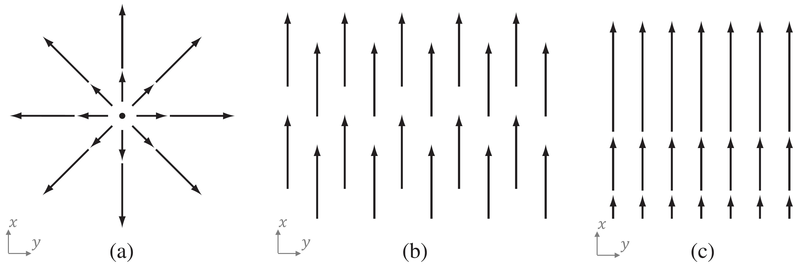
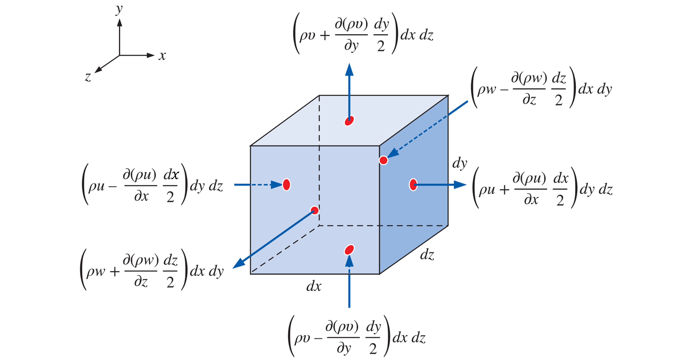
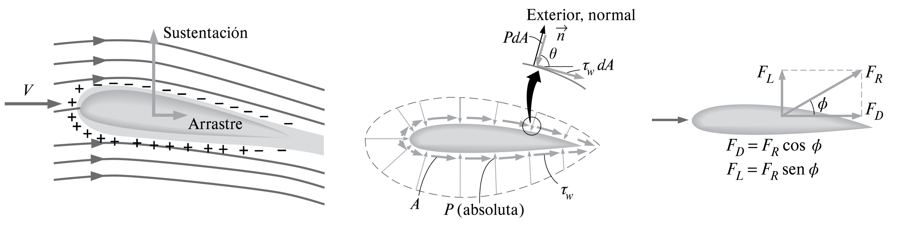

4. Análisis diferencial de flujos#
4.1. Introducción#
Hasta ahora hemos utilizado un enfoque integral, donde aplicabamos las ecuaciones de convervación a un volumen de control. El análisis de volumen de control es útil cuando se esta interesado en las características globales de un flujo y los cuerpos con los que interactúa, por ejemplo: fuerzas de arrastre, energía de una bomba o turbina, velocidades promedio en un ducto, etc. El análisis diferencial, por otro lado, permite determinar las interacciones de un fluido con una estructura en cada punto dentro del volúmen de control.

En esta unidad revisaremos los aspectos generales del análisis diferencial de flujos. Comenzaremos por revisar los aspectos básicos de cálculo vectorial y cinemática de fluidos. Luego derivaremos las ecuaciones de conservación de masa y momento lineal en su forma diferencial.
4.2. Repaso de cálculo vectorial#
4.2.1. Descripción Euleriana y Lagrangiana#
El análisis en un volúmen de control utiliza la descripción euleriana. Este enfoque se basa en el análisis de la velocidad \(\vec{V}\) en función del tiempo y la posición, es decir \(\vec{V}(t,x,y,z)\). Este enfoque difiere de la descripción lagrangiano, comúnmente usada en estática y dinámica de sólidos, donde estudiamos la evolución de la posición \(x\) en función del tiempo, es decir \(x(t)\).

4.2.2. Variables de campo en mecánica de fluidos#
El cálculo vectorial se transforma en la raíz del enfoque euleriano, ya que ahora trabajamos con variables de campo, específicamente:
El campo de velocidad, en particular, se define por tres componentes:
donde \(u\), \(v\) y \(w\) son las componentes de la velocidad e direcciones \(x\), \(y\) y \(z\), respectivamente.
4.2.3. Operadores diferenciales#
Debido a la cantidad de variables independientes presentes en cada parámetro, es conveniente utilizar operadores para analizar tasas de cambio y otras caracteristicas.
Para esto definimos el operador \(\nabla\) o “del”, como:
El operador \(\nabla\) es un vector que aplica una derivada espacial a una variable de campo. La forma que toma este operador depende del tipo de variable y del producto vectorial aplicado.
4.2.3.1. Gradiente. \(\nabla(\quad)\)#
Es equivalente a la derivada de una función, pero en múltiples dimenciones. Permite identificar zonas de crecimiento o decrecimiento de una variable de campo.
Si el gradiente se aplica a un campo escalar, el resultado es un campo vectorial. Por ejemplo, el gradiente de la densidad es:
Si el gradiente se aplica a un campo vectorial, el resultado es un tensor de orden 2. Por ejemplo, el gradiente de la velocidad es:
4.2.3.2. Divergente. \(\nabla\cdot(\quad)\)#
Solo se aplica a campos vectoriales. Se define como el producto punto entre el operador Del y un campo vectorial:
El divergente permite medir cuanto un campo vectorial diverge o converge respecto de un punto en cuestión.
Por ejemplo:
{kind=link}
(a) \(\nabla\cdot\vec{V} \gt 0\)
(b) \(\nabla\cdot\vec{V} = 0\)
(c) \(\nabla\cdot\vec{V} \gt 0\)
4.2.3.3. Rotacional. \(\nabla\times(\quad)\)#
Solo se aplica a campos vectoriales. Se define como el producto cruz entre el operador Del y un campo vectorial:
El rotacional es una medida de cuanto un campo vectorial rota respecto de un punto en cuestión.
Por ejemplo:

(a) \(\nabla\times\vec{V} \gt 0\)
(b) \(\nabla\times\vec{V} \gt 0\)
Notar que en la figura, el divergente, \(\nabla\cdot\vec{V} = 0\) en todos los casos.
4.3. Fundamentos de la cinemática de fluidos#
4.3.1. Derivada material#
Debemos definir un nuevo operador, acorde al enfoque euleriano, para evaluar la tasa de cambio de una variable, \(d/dt\).
Analicemos, por ejemplo, la aceleración (\(\vec{a}\)) de una partícula de fluido considerando ambos enfoques.
Según el enfoque lagrangiano, la aceleración de una partícula con velocidad \(\vec{V}\), es: \(\vec{a} = \frac{d \vec{V}}{dt}\)
Según el enfoque euleriano, la aceleración de una partícual en un volumen de control:
En el desarrollo anterior, hemos definido un nuevo operador denominado derivada material (o sustancial), \(\frac{D}{Dt}\) o \(\frac{d}{dt}\) que describe la variación temporal de una partícula de fluido a medida que se mueve por el campo de flujo:
El término \(\frac{\partial}{\partial t}(\quad)\) se denomina variación temporal local y es cero para flujos estacionarios.
El término \(\vec{V}\cdot\nabla(\quad)\), se denomina término convectivo, este término puede ser diferente de cero inclusive para flujos estacionarios
La derivada material se puede aplicar a otras propiedades de fluidos, como por ejemplo, la densidad:
4.3.2. Líneas de corriente#
Una línea de corriente es una curva que, en todas partes, es tangente a la velocidad local instantánea. Son útiles para identificar el movimiento del fluido en todo el campo de flujo.

4.4. Ecuaciones de conservación en forma diferencial#
A partir de los conceptos revisados anteriormente podemos intepretar los patrones de flujo y perfiles de velocidad que caracterizan la interacción de un fluido con una estructura

El objetivo de esta sección es derivar las leyes de conservación, en su forma diferencial, que rigen el comportamiento de estas variables de campo.
Existen dos formas para derivar estas ecuaciones:
Mediante un balance en un volúmen de control diferencial
Utilizando el teorema de Gauss o teorema de la divergencia que establece:
Teorema de la divergencia: la integral en una superficie cerrada \(S\) de un campo vectorial \(\vec{f}\) es igual a la integral de la divergencia de \(\vec{f}\) sobre un volumen \(V\) dentro de la superficie
(4.9)#\[\begin{equation} \oint_A \vec{f}\cdot\hat{n} dA = \int_V \nabla\cdot \vec{f} d\forall \end{equation}\]
En esta unidad usaremos el segundo método.
4.4.1. Ecuación de conservación de masa (continuidad)#
Comenzamos con la ecuación de conservación de masa aplicado sobre un volumen de control fijo e indeformable:
Para satisfacer esta ecuación el integrando debe ser cero, y tenemos:
A partir de la identidad, \( \nabla\cdot(\rho\vec{V}) = \vec{V}\cdot\nabla\rho + \rho(\nabla\cdot\vec{V})\), derivamos la ecuación de conservación de masa en su forma diferencial:
Esta ecuación también se conoce como la ecuación de continuidad.
Alternativamente, podemos derivar la ecuación de conservación de masa mediante el análisis de volúmen de control sobre un volúmen diferencial
{kind=link}
La demostración se deja como ejercicio.
4.4.2. Ecuación de conservación de momento lineal#
Podemos aplicar el teorema de Gauss sobre el lado derecho de la ecuación de conservación de momento lineal para determinar su forma diferencial:
De igual forma que con la ecuación de conservación de masa, un análisis de momento lineal sobre un volúmen de control diferencial nos permite llegar a la misma expresión (ver referencias).
Respecto a \(\sum F_\mathrm{ext}\), debemos considerar el efecto de la distribución de presiones (\(p\)), tensiones de corte (\(\tau\)) y gravedad (\(\vec{g}\)). Por ejemplo, en el caso de un perfil aerodinámico, la suma de fuerzas externa da lugar al arrastre y sustentación.
{kind=link}
Matemáticamente, podemos representar el efecto de las fuerzas externas como:
Donde \(\bar{\tau}\) es el tensor de esfuerzos
Usando el teorema de la divergencia, podemos reordenar la expresión (7.12) como:
donde \(\bar{I}\) es el tensor identidad.
Combinando las ecuaciones (7.11) y (7.14), tenemos:
Mediante la identidad \( \nabla\cdot\left(\rho\vec{V}\vec{V}\right) = \vec{V}\nabla\cdot\left(\rho\vec{V}\right) + \rho\vec{V}\cdot\nabla\vec{V} \) obtenemos:
El primer término de la izquierda corresponde a la ecuación de continuidad (7.10). Así, la ecuación de conservación de momento lineal en su forma diferencial es:
Esta ecuación también se conoce como la Ecuación de Cauchy.
4.5. Referencias#
Çengel Y. A. y Cimbala M. J. Mecánica de Fluidos: Fundamentos y Aplicaciones, 4ta Ed., McGraw Hill, 2018
Capitulo 4. Cinemática de fluidos
Capitulo 9. Análisis diferencial de flujo de fluidos
White F. M. Mecánica de Fluidos, 5ta Ed., McGraw Hill, 2004
Capítulo 4. Relaciones diferenciales para una partícula fluida